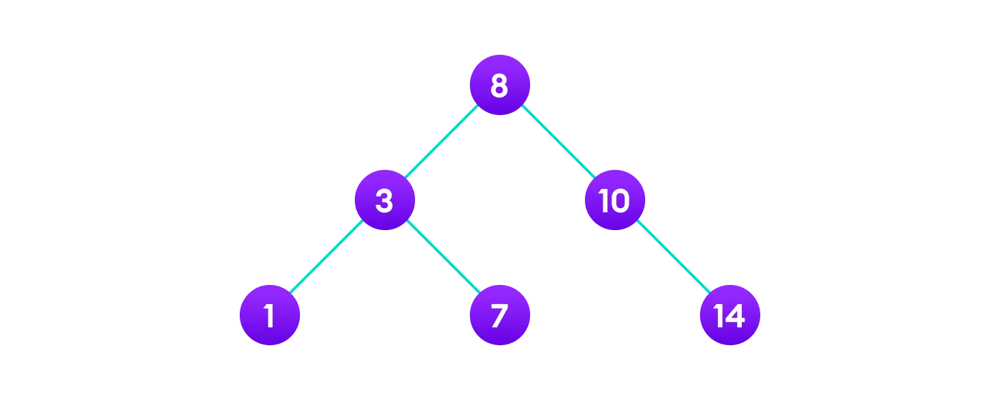

Tree Rotations / AVL Trees
By Diego Llanes
Who am I?
my name is Diego and I am a CS Masters student, my hobbies include:
- rock climbing
- mountain biking
- running
- hiking
- backpacking
Masters Program
you may at one point in time have thought to yourself what does a masters degree look like?
it mostly includes the following things:
- taking a class or two
- doing research (loaded answer)
- doing what I'm doing now!
Research???
what is research??? you may be asking
it basically boils down to solving problems that other people haven't solved yet
what's so awesome about western is that we have a super awesome undergraduate research program!
all that you have to do to get involved is talk to a professor / assistant professor, and see if their interests align with yours!
Research??? (cont.)
all this to say that if you are interested in:
- working on cool stuff
- being stoked
- adding things to your resume
- possible tuition reimbursement
- a job possibly

Research??? (cont. cont.)
if you are interested, hop on over to the faculty page, and look for anyone with the title "Associate/Assistant/* Professor".

Remember BSTs?
right, i'm here to teach!
last week we learned about how BSTs work!
we found out that we could find and insert an element into a BST in usually $lg(n)$ time!
Remember BSTs? (cont.)
but alas! its not always $lg(n)$ for these
if we insert 4, 7, 16, 20, 37, 38, and 43 in that order...
we get a linked list!!! 🤦

Remember BSTs linked lists?

Remember BSTs linked lists?
oh no! what ever will we do???
if only we could figure out a way to "balance" this tree!
Tree Rebalancing
fortunately for us, there does exist such an algorithm for tree rebalancing!lets check it out
Tree Rebalancing: Expected Outcomes
By the end of this lecture we should- be able to find the "balance factor" of a tree
- do a rotation on a BST
Balance Factors
well, we can visually see when a tree is super unbalanced, so a "balance factor" just allows us to formalize that feeling!

Balance Factors (ABCD Cards)
what are some ways that we could measure this?
- A) $BF(root) = Height(root_{left}) - Height(root_{right})$
- B) $BF(root) = Count\_Nodes(root_{left}) - Count\_Nodes(root_{right})$
- C) $BF(root) = Sum\_of\_Heights(root_{left}) + Sum\_of\_Heights(root_{right})$
- D) $BF(root) = abs(Height(root_{left}) - Height(root_{right}))$
Balance Factors (ABCD Cards)
what are some ways that we could measure this?
- A) $BF(root) = Height(root_{left}) - Height(root_{right})$
- B) $BF(root) = Count\_Nodes(root_{left}) - Count\_Nodes(root_{right})$
- C) $BF(root) = Sum\_of\_Heights(root_{left}) + Sum\_of\_Heights(root_{right})$
- D) $BF(root) = abs(Height(root_{left}) - Height(root_{right}))$
Balance Factors
we just need a tool to do this for us

Tree Rebalancing
but we're going to break it down into some simple steps

Tree Rebalancing
The main three steps of a left rotation are going to be:
- Transfer $\beta$: $x$’s right subtree becomes $y$’s old left subtree ($\beta$).
- Transfer the Parent: $y$’s parent becomes $x$’s old parent.
- Transfer $x$: $x$ becomes $y$’s left subtree.

Tree Rebalancing
The main three steps of a left rotation are going to be:
- Transfer $\beta$: $x$’s right subtree becomes $y$’s old left subtree ($\beta$).
- Transfer the Parent: $y$’s parent becomes $x$’s old parent.
- Transfer $x$: $x$ becomes $y$’s left subtree.
Tree Rebalancing
The main three steps of a left rotation are going to be:
- Transfer $\beta$: $x$’s right subtree becomes $y$’s old left subtree ($\beta$).
- Transfer the Parent: $y$’s parent becomes $x$’s old parent.
- Transfer $x$: $x$ becomes $y$’s left subtree.
Tree Rebalancing
The main three steps of a left rotation are going to be:
- Transfer $\beta$: $x$’s right subtree becomes $y$’s old left subtree ($\beta$).
- Transfer the Parent: $y$’s parent becomes $x$’s old parent.
- Transfer $x$: $x$ becomes $y$’s left subtree.
Tree Rebalancing (formal alg)
def left_rotate(tree, x):
Tree Rebalancing (formal alg)
def left_rotate(tree, x):
y = x.right # set y
x.right = y.left
Tree Rebalancing (formal alg)
def left_rotate(tree, x):
y = x.right # set y
x.right = y.left
if y.left is not None:
y.left.parent = x
y.parent = x.parent # link x's parent to y
Tree Rebalancing (formal alg)
def left_rotate(tree, x):
y = x.right # set y
x.right = y.left
if y.left is not None:
y.left.parent = x
y.parent = x.parent # link x's parent to y
if x.parent is None:
tree.root = y
Tree Rebalancing (formal alg)
def left_rotate(tree, x):
y = x.right # set y
x.right = y.left
if y.left is not None:
y.left.parent = x
y.parent = x.parent # link x's parent to y
if x.parent is None:
tree.root = y
elif x == x.parent.left:
x.parent.left = y
Tree Rebalancing (formal alg)
def left_rotate(tree, x):
y = x.right # set y
x.right = y.left
if y.left is not None:
y.left.parent = x
y.parent = x.parent # link x's parent to y
if x.parent is None:
tree.root = y
elif x == x.parent.left:
x.parent.left = y
else:
x.parent.right = y
Tree Rebalancing (formal alg)
def left_rotate(tree, x):
y = x.right # set y
x.right = y.left
if y.left is not None:
y.left.parent = x
y.parent = x.parent # link x's parent to y
if x.parent is None:
tree.root = y
elif x == x.parent.left:
x.parent.left = y
else:
x.parent.right = y
y.left = x
x.parent = y
Tree Rotations
Now that you understand the formal algorithm, lets work it out together!

AVL Trees (Day 2)
Diego Llanes
AVL Trees Expected Outcomes
what I hope you get out of this lecture is the following:
- an understanding of what an AVL tree is
- relative advantages and disadvantages of an AVL tree
- how to implement their operations
AVL Trees
what even is an AVL tree to begin with
an AVL tree is a data-structure that allows us to guarantee $O(lg(N))$ search, insertion, and deletion
AVL Trees
| search | insertion | deletion | |
|---|---|---|---|
| Linked List | $O(N)$ | $O(N)$ | $O(N)$ |
| BST | $O(N)$ | $O(N)$ | $O(N)$ |
| AVL Tree | $O(lg(N))$ | $O(lg(N))$ | $O(lg(N))$ |
AVL Trees
what if I told you that you have all of the tools that you need to implement AVL trees?

but I promise, you do! we just need to tie it all together!
AVL Trees (ABCD Cards)
what was the reason that we had "bad" ($O(N)$) worst case times before?
- A) Tree has too many nodes
- B) Not having a "complete tree"
- C) Not having a "full tree"
- D) Tree getting unbalanced
AVL Trees (ABCD Cards)
what was the reason that we had "bad" ($O(N)$) worst case times before?
- A) Tree has too many nodes
- B) Not having a "complete tree"
- C) Not having a "full tree"
- D) Tree getting unbalanced
AVL Trees
An AVL tree is simply a BST where all nodes in the tree always have a balance factor of 1, -1 or 0
$BF(R)=Height(R_l) - Height(R_r)$
AVL Tree Operations
as we know, the three main operations for a tree are:
- search
- insert
- delete
so lets check out how these are going to work for an AVL tree!
AVL Trees (search)
We can actually inference these data-structures just like a BST because they have the same format!
lets hope they're all this simple!
AVL Trees (insert)
unfortunately for us, insertion isn't gonna be so easy 🙁
but the main idea is simple
- insert just like a regular old BST
- work our way up from the leaf we placed up to root
- make sure every thing is still balanced
- if not balanced $\implies$ balance it
AVL Trees (insert)
ok if I planned everything correctly there is an example on the whiteboard

AVL Trees (insert)
hopefully we just worked through an example on the whiteboard of what an insertion will look like
AVL Trees (insert)
it might have been intuitively easy to decide which side needed to get rebalanced there
but it is going to be useful if we have some "rules" to follow.
AVL Trees (insert)
before we start an insertion, we assume that the tree is roughly balanced
this means that for every node, the following holds: $abs(BF(node)) \le 1$
this is super useful, because there are really only 4 cases that we have to worry about!
AVL Trees (insert)
the four cases are as follows that could unbalance our tree are
note: $BF(node) = Height(node_r) - Height(node_l)$ in this example
AVL Trees (insert) (ABCD)
let's focus on case one for now (unbalanced left)
which of the following could fix our tree?
A) left_rotate(N)B) right_rotate(N)C) left_rotate(C)D) right_rotate(C)
AVL Trees (insert) (ABCD)
let's focus on case one for now (unbalanced left)
which of the following could fix our tree?
A) left_rotate(N)B) right_rotate(N)C) left_rotate(C)D) right_rotate(C)
AVL Trees (insert) (ABCD)
let's focus on case one for now (unbalanced left)
which of the following could fix our tree?
A) left_rotate(N)B) right_rotate(N)C) left_rotate(C)D) right_rotate(C)
AVL Trees (insert) (ABCD)
great work, now let's focus on case two (unbalanced right)
it's going to take two different rotations two do this one
left_rotate(C)
AVL Trees (insert) (ABCD)
great work, now let's focus on case two (unbalanced right)
it's going to take two different rotations two do this one
left_rotate(C)
AVL Trees (insert) (ABCD)
great work, now let's focus on case two (unbalanced right)
it's going to take two different rotations two do this one
left_rotate(C)
AVL Trees (insert) (ABCD)
great work, now let's focus on case two (unbalanced right)
it's going to take two different rotations two do this one
left_rotate(C)right_rotate(N)
AVL Trees (insert) (ABCD)
great work, now let's focus on case two (unbalanced right)
it's going to take two different rotations two do this one
left_rotate(C)right_rotate(N)
AVL Trees (insert)
what's nice about what we just learned is that we actually just solved all four cases!
let's re-examine our cases and see if we can notice any similarities!
AVL Trees (insert)
alright, it's cool visualization time!
if you google "AVL tree visualizer", it should be the first result.
but if it's not, you can navigate to these slides and click here
worksheet?
I don't really know how much time that took up, but if there are any remaining seconds, let's work on some worksheets!
if you have enjoyed these lectures, please make sure to make note to Dr. Nilles. it would genuinely mean a lot!